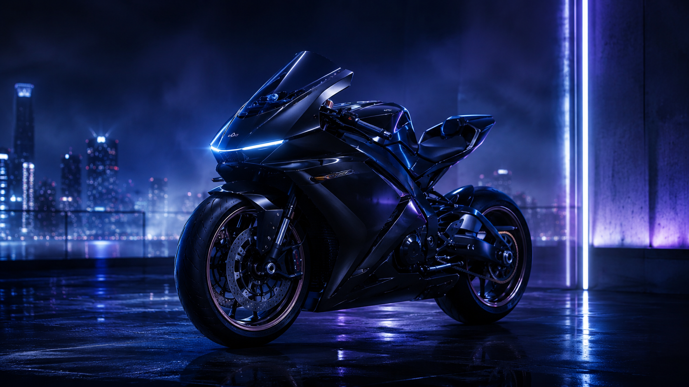

参考你给的网页排版，我把首页升级成更像品牌作品集的视觉结构：更高级的星空粒子背景、带鼠标联动和更自然的流星，主视觉依然是夜晚摩托车海报。

首页、个人页、项目页都按更专业的 portfolio 方式重新整理。
把视觉、工程和知识沉淀放在同一个长期网站中。
将测试申请、异常、复测与审核统一管理，让项目进度从“靠记忆”转向“可追踪”。
围绕扭矩、效率、温升、老化和爬坡，建立更完整的测试评价框架。
从知识模块快速进入你关注的工程主题。
搜索文章、项目和技术主题。